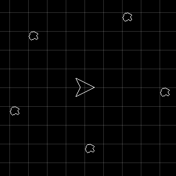
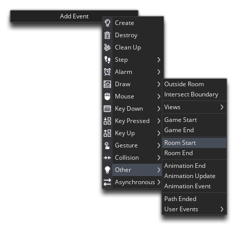
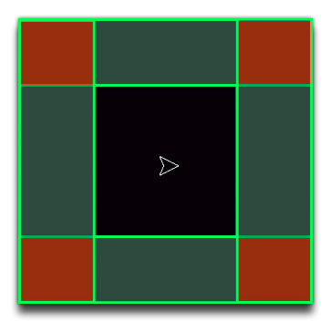
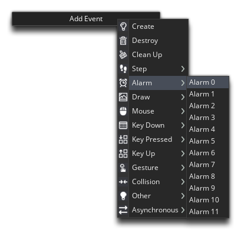

In this final chapter we're going to be looking at making the game a bit more polished and interesting for the player.
NOTE: If you close the accompanying video then you can get it back by clicking here
To start with, we're going to change how the asteroids are created, so open the room "rm_game" and remove all the instances of the object "obj_asteroid":

You can remove an instance by clicking  on it to select it and then using the
on it to select it and then using the  key.
key.
With that done, we go back to our controller "obj_game" and add a Room Start event:

This event will be run at the start of every room, so our persistent object will trigger this event each time a new room is entered. In this event we add the following code:
if (room == rm_game)
{
repeat(6)
{
var xx = choose(irandom_range(0, room_width * 0.3), irandom_range(room_width * 0.7, room_width));
var yy = choose(irandom_range(0, room_height * 0.3), irandom_range(room_height * 0.7, room_height));
instance_create_layer(xx, yy, "Instances", obj_asteroid);
}
alarm[0] = 60;
}
You should know at this point what each of the functions used here does individually, but together what they are doing is generating an x/y position within the room that is limited to only the corners of the room, as illustrated here:

This gives the player the best possible starting circumstances as there will be no asteroids created near them. We now need to continue to create asteroids as the player progresses and destroys them, otherwise there'll quickly be no asteroids left for them to shoot at, which is why we set the alarm instance variable. An alarm is an event that will be triggered some time after it is set, and it is set using the alarm variable. In this case we are setting the Alarm 0 Event to be triggered 60 steps after we set it.
Add the Alarm 0 Event to the object now:

In this event, we're going to spawn the asteroids not in the corner of the room, but at the boundaries of the room. This will make it a lot less obvious to the player when they are created. For this to work we need to choose either a random position along the x-axis and a value for y of either 0 or the room height, or a value of either 0 or the room width for x and a random value for y. The following code does just that, so add it into the Alarm 0 event:
if (choose(0,1) == 0)
{
var xx = choose(0, room_width);
var yy = irandom_range(0, room_height);
}
else
{
var xx = irandom_range(0, room_width);
var yy = choose(0, room_height);
}
We also need to add in the code to spawn the asteroid and also to reset the alarm so that it will lopp and continually create asteroids:
instance_create_layer(xx, yy, "instances", obj_asteroid);
alarm[0] = 4 * room_speed;
To set the alarm we have used the room_speed global variable. This variable holds the number of steps the room will perform in a second (the game speed), which is what we set right at the start of this tutorial: 60FPS. So, by setting the alarm to 4 * room_speed we are setting it to trigger again in 4 seconds.
There is one problem with this event, however... Because the object "obj_game" is persistent and the alarm is always reset, we would end up with asteroids in rooms other than the game room, since the alarm will be running even after the player has won or lost. To avoid this, add this code at the start of the code block, before the code given above:
if (room != rm_game)
{
exit;
}
Using "!=" in the above code is checking to see if something is not equal to the given value ("!" means "not"), so if the current room is not the game room, the rest of the event will be skipped (the exit statement will end the event that it is called in immediately, so any code after it will not be run).
If you run the game now and wait a few seconds you should see that asteroids are spawning constantly around the room edges.
Click "Next" to continue...